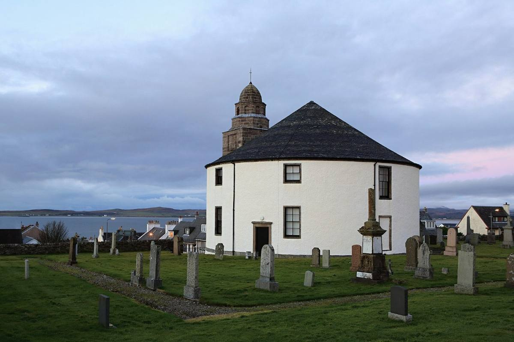

Bowmore was licensed in 1779, which makes it Islay's oldest distillery and one of the oldest in Scotland. The village around it was planned in 1768 by the laird, Daniel Campbell, as Islay's new capital.
Its No.1 Vaults, also from 1779, is partly below sea level, with the waters of Loch Indaal on the other side of the wall. Bowmore says it's the oldest whisky maturation warehouse in the world, and the casks pick up a salty edge from the sea air.
Bowmore malts about 30% of its own barley on the floor, peated to around 25 ppm, and buys the rest from Port Ellen Maltings. It runs four stills, takes its water from the River Laggan, and is owned by Suntory.
Don't miss: walk up Main Street to the Round Church at the top. It was built round in 1767, the story goes, so the Devil would have no corners to hide in. It's about five minutes from the distillery, and there's time for it and lunch before the 13:30 bus.
